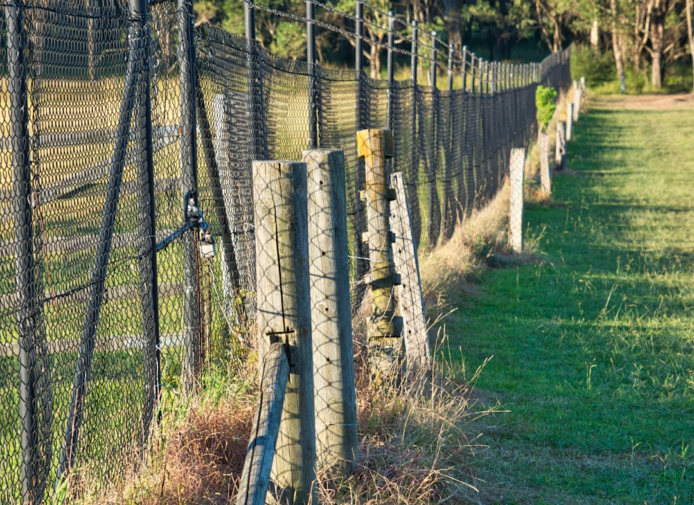

A Sunshine Coast fence choice usually turns on four sourced checks: site exposure, material, boundary position and quote scope. The source page identifies six job types, Colorbond, timber, pool, aluminium slat, rural fencing and gates. It also notes Queensland dividing fence timing: one month to reach agreement after a notice, then a possible QCAT application within two months. Pool barriers and QBCC licensing need separate confirmation where they apply.
For homeowners comparing fencing contractors sunshine coast options, the useful starting point is the fence line itself, including exposure, access, boundary questions and the material the site can reasonably support.
Fencing Contractors Sunshine Coast Explained
Noosa Fencing frames the first decision around the site, not the catalogue. That is a useful way to compare fencing contractors sunshine coast enquiries because the same run length can behave differently on a beachfront block, a sheltered residential boundary or a hinterland acreage line.
The source page points to three early details that make a quote more useful: the fence line, the suburb or postcode and whether an old fence needs to be removed. Those details help separate a simple boundary replacement from a pool barrier, a gate project, a rural run or a job where access and ground conditions need closer inspection.
- Describe the full run, including corners, returns and gates.
- Say whether there is an existing fence, posts or disposal to consider.
- Flag neighbours, pools, slopes or acreage boundaries before measuring.
- Ask what assumptions sit behind the quote, not just the metre rate.
Material Choices Should Match The Setting
The published guide links material choice to exposure and purpose. Colorbond and aluminium slat are presented as suited to salt air and wind on the coastal strip, while timber remains relevant on established hinterland streets and shared dividing fences. Rural fencing is treated separately because paddock and acreage boundaries work differently from residential frontage.
That does not mean one product is automatically better. Privacy, airflow, street presentation and pool safety lead to different specifications. A front screen may need a different balance from a side boundary. A pool barrier is not just a privacy job, because the source page says pool fencing is a compliance led job with its own safety requirements.
For neighbouring readers comparing a Noosa specific guide, the related page on fencing contractors in Noosa gives another local angle without changing the basic checklist: match the material to the site and get the assumptions in writing.
Boundary And Pool Questions Come Before Finish
A boundary fence is partly a building decision and partly a neighbour conversation. The source page refers to Queensland's Neighbourhood Disputes (Dividing Fences and Trees) Act 2011 and says adjoining owners have a process for considering a sufficient dividing fence. It also notes that premium material, extra height or a preferred finish is not automatically shared if one owner wants more than sufficient.
Before settling on a finish, ask whether the proposed height changes when measured from the ground or near a retaining wall. Corner blocks can raise sight line questions, and pool barriers follow a separate inspection pathway. The source page says a licensed pool safety inspector is the person who confirms pool barrier requirements.
The practical order is: locate the boundary, agree the purpose, identify any pool or height issue, then choose the material. That order keeps the visible finish from hiding the more important approval and neighbour questions.
What A Written Quote Should Show
A metre rate can help with early budgeting, but the source page warns that it does not describe the whole site. Ground conditions, access, removal, disposal, corners, returns and gates can all change the work beyond the straight metres. Treat a rate as a planning prompt, then ask for the scope behind it.
A dependable quote should identify the material, fence height, gate inclusions, removal work, disposal, footing assumptions and any site limits the contractor has noticed. It should also make clear whether the quote is based on a site measure or an indicative description supplied online.
- Coastal exposure: ask how posts and materials are specified for wind and salt air where relevant.
- Hinterland ground: ask how soil and access affect the footing approach.
- Old fences: ask whether removal, disposal and making good are included.
- Pool jobs: ask where inspection and compliance steps sit in the process.
Who This Applies To
This guide is most useful for owners planning residential boundary fencing, pool fencing, rural fencing, front screens or gates across the Noosa and Sunshine Coast setting described in the source material. It also suits owners who are not ready to book work yet but want to prepare a clean enquiry.
It is less useful where a reader needs legal advice about a neighbour dispute or a formal pool safety decision. In those cases, the published page points toward the relevant process: use the dividing fence framework for neighbour contribution questions, and use a licensed pool safety inspector for pool barrier confirmation.
For a first enquiry, keep the message factual. Give the suburb or postcode, the approximate run, the desired function, the current fence condition and any known pool, slope, access or neighbour issue. That gives a contractor enough context to decide whether the next step is advice, a site measure or a written quote.
- Map the run. Measure the approximate line and note corners, returns, gates, slopes and hard access points.
- Identify the purpose. Decide whether the fence is mainly for privacy, pool compliance, stock control, street presentation or a shared boundary.
- Check constraints. Flag neighbours, pool barriers, retaining walls, corner sight lines and any old fence removal before asking for a price.
- Request a written scope. Ask for material, height, removal, disposal, footing assumptions and exclusions to be shown clearly.
| Decision | When it matters | What to ask |
|---|---|---|
| Colorbond or aluminium slat | Coastal exposure, privacy or street presentation | How will the posts and panels suit wind and salt air? |
| Timber boundary fence | Established residential or shared dividing fence settings | What height, style and neighbour contribution assumptions are included? |
| Pool barrier | Any fence forming part of a pool enclosure | Who confirms the pool safety requirements and inspection pathway? |
| Rural fencing | Acreage, paddock or long hinterland boundary | What QBCC scope, access and strained wire assumptions apply? |
| Gate or automation | Driveways, pool areas or controlled access points | Are power, solar option, hardware and opening type included? |
Common questions
What details should I send before asking for a fencing quote? Send the suburb or postcode, approximate fence line, preferred material if known, current fence condition and any access, pool, slope or neighbour issue. The source page says a few details about the fence line are enough to get started.
Is a metre rate enough to compare fence prices? No. The source page says a rate can help sanity check a project, but access, ground conditions, gates, corners, removal and disposal can all change the scope behind the number.
When does a pool fence need separate attention? Whenever the barrier is part of a pool area. The source page says pool barriers have separate safety requirements and that only a licensed pool safety inspector confirms the inspection pathway.
How does a Queensland dividing fence disagreement usually start? The source page says owners should start with a written description of the work and at least one quote. It also notes a notice to contribute, one month to reach agreement and a possible QCAT application within two months of the notice.
This guide covers practical quote, boundary, material and pool barrier questions for Sunshine Coast fencing projects described by the source page.